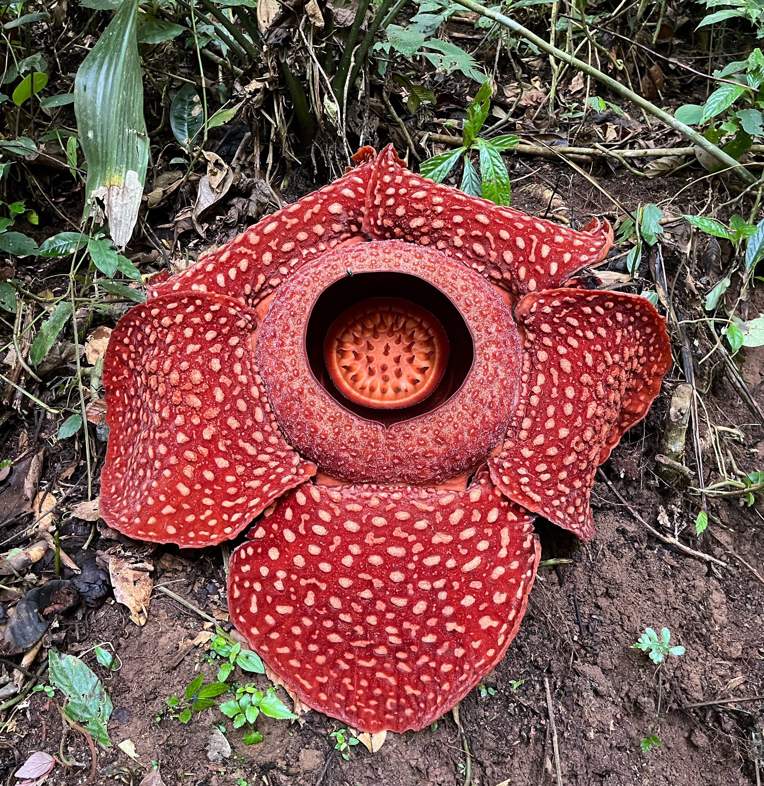

Rafflesia arnoldii is renowned for producing the largest individual flower on Earth, measuring up to 1 meter (3 feet) in diameter and weighing up to 11 kg (24 lbs). Native to the rainforests of Sumatra and Borneo, this parasitic plant lacks stems, leaves, or roots and emits a strong odor of decaying flesh to attract pollinators.
